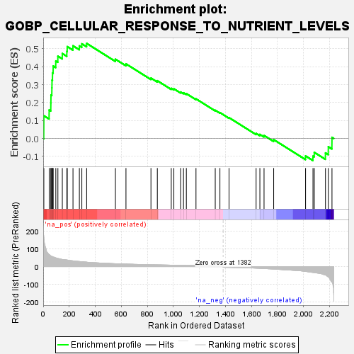
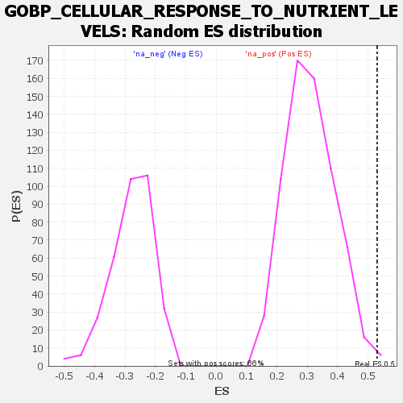

| Dataset | rank |
| Phenotype | NoPhenotypeAvailable |
| Upregulated in class | na_pos |
| GeneSet | GOBP_CELLULAR_RESPONSE_TO_NUTRIENT_LEVELS |
| Enrichment Score (ES) | 0.5301254 |
| Normalized Enrichment Score (NES) | 1.7097232 |
| Nominal p-value | 0.009090909 |
| FDR q-value | 0.5222904 |
| FWER p-Value | 0.991 |

| SYMBOL | RANK IN GENE LIST | RANK METRIC SCORE | RUNNING ES | CORE ENRICHMENT | |
|---|---|---|---|---|---|
| 1 | SAR1B | 5 | 174.041 | 0.1270 | Yes |
| 2 | MAPK3 | 46 | 67.413 | 0.1588 | Yes |
| 3 | TNRC6A | 59 | 59.997 | 0.1979 | Yes |
| 4 | ATF2 | 60 | 59.671 | 0.2422 | Yes |
| 5 | KANK2 | 67 | 58.123 | 0.2827 | Yes |
| 6 | RPTOR | 68 | 57.783 | 0.3256 | Yes |
| 7 | LAMP2 | 72 | 55.773 | 0.3656 | Yes |
| 8 | KAT5 | 77 | 53.901 | 0.4038 | Yes |
| 9 | TBC1D7 | 97 | 49.273 | 0.4318 | Yes |
| 10 | PPARA | 113 | 45.533 | 0.4588 | Yes |
| 11 | DRAM1 | 147 | 40.176 | 0.4736 | Yes |
| 12 | ULK1 | 182 | 37.266 | 0.4857 | Yes |
| 13 | SH3GLB1 | 185 | 36.838 | 0.5122 | Yes |
| 14 | FOXO3 | 229 | 32.387 | 0.5167 | Yes |
| 15 | XPR1 | 278 | 28.721 | 0.5161 | Yes |
| 16 | LAMTOR1 | 297 | 26.777 | 0.5278 | Yes |
| 17 | TFEB | 334 | 25.239 | 0.5301 | Yes |
| 18 | JMY | 555 | 16.199 | 0.4419 | No |
| 19 | KAT2B | 636 | 14.317 | 0.4161 | No |
| 20 | WDR45 | 828 | 10.419 | 0.3367 | No |
| 21 | INHBB | 877 | 9.639 | 0.3220 | No |
| 22 | GAS6 | 984 | 8.161 | 0.2798 | No |
| 23 | GLUL | 1004 | 7.988 | 0.2770 | No |
| 24 | PAK6 | 1056 | 7.199 | 0.2591 | No |
| 25 | KCNB1 | 1078 | 6.955 | 0.2547 | No |
| 26 | MAP1LC3A | 1100 | 6.667 | 0.2501 | No |
| 27 | GDAP1 | 1174 | 5.710 | 0.2211 | No |
| 28 | MLXIPL | 1322 | 4.411 | 0.1574 | No |
| 29 | GBA1 | 1358 | 4.090 | 0.1444 | No |
| 30 | SESN3 | 1428 | -4.542 | 0.1164 | No |
| 31 | CAV1 | 1636 | -8.577 | 0.0284 | No |
| 32 | ASNS | 1665 | -9.705 | 0.0228 | No |
| 33 | UPP1 | 1697 | -11.062 | 0.0169 | No |
| 34 | FAS | 1771 | -13.652 | -0.0062 | No |
| 35 | PMAIP1 | 2016 | -27.239 | -0.0972 | No |
| 36 | WDR45B | 2073 | -32.942 | -0.0982 | No |
| 37 | MAP3K5 | 2083 | -33.774 | -0.0773 | No |
| 38 | PRKAA1 | 2169 | -47.882 | -0.0804 | No |
| 39 | PAK2 | 2191 | -59.253 | -0.0460 | No |
| 40 | SIRT1 | 2219 | -87.108 | 0.0064 | No |
